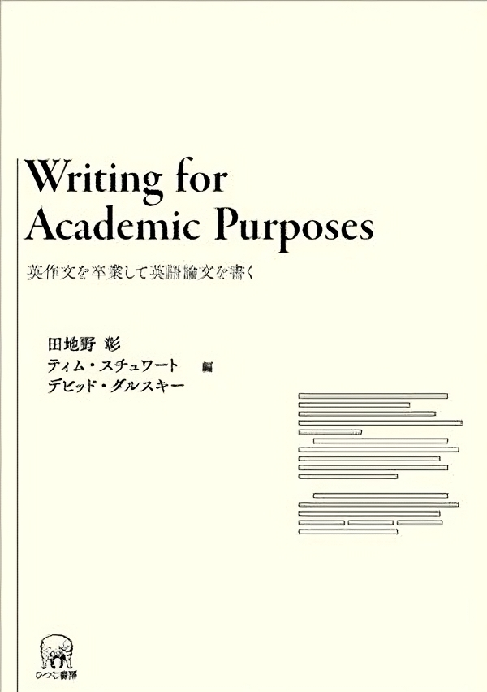

教育コンテンツ
2025年10月15日
知識としての語彙力はForm・Meaning・Usageの３つの観点の理解力から構成される
Form
Meaning
Usage
プログラミング言語の理解力も，Form・Meaning・Usage の3観点から理解することができる
Form
for (let i=0; i<10; i++) の括弧・セミコロンの役割を理解しているMeaning
append() → 「リスト操作」, 「破壊的変更」, 「配列末尾」Usage
if ... else，try ... except，for ... in などのペアを正しく使えるglobal変数の慎重な利用① Receptive knowledge
② Productive knowledge
record1:
観点: Form
children:
- チェック項目: syntax
Receptive skill:
- コードの構文構造を見て意味を理解できる
- 括弧やインデントの意味を理解できる
Productive skill:
- 正しい構文でコードを書ける
- 構文エラーを自力で修正できる
- チェック項目: spelling
Receptive skill:
- 言語特有のキーワードや識別子を見て意味を理解できる
- 大文字・小文字・予約語の違いを認識できる
Productive skill:
- キーワードや識別子を正確に書ける
- 命名規則に従って識別子を作れる
- チェック項目: structure
Receptive skill:
- 文や式の構成要素を理解できる
- 関数やクラスの構造を読み解ける
Productive skill:
- 再利用可能な関数を設計できる
record2:
観点: Meaning
children:
- チェック項目: concept-behavior
Receptive skill:
- ループ・条件分岐・関数などの概念と挙動を理解できる
- コードの意味を説明できる
Productive skill:
- 概念をコードに正しく落とし込める
- 推定量→疑似コード→アルゴリズム実装の流れを実行できる
- チェック項目: association
Receptive skill:
- コードから関連知識を連想できる
- API名やメソッド名から用途を推測できる
Productive skill:
- 適切な関数やメソッドを選択できる
- 挙動と整合的な命名をすることができる
record3:
観点: Usage
children:
- チェック項目: grammatical role
Receptive skill:
- 各構文要素がどんな役割を果たすか理解できる
- コード全体の構造を把握できる
Productive skill:
- 処理の意図に応じて構文を選択できる
- 構成要素を組み合わせてクラスを構築できる
- チェック項目: collocation
Receptive skill:
- よく使われる構文パターンを理解できる
- 組み合わせの自然さを判断できる
Productive skill:
- 自然なコードペアを使える（例：<code>if...else</code>, <code>try...except</code>, <code>for...in</code>）
- チェック項目: context constraints
Receptive skill:
- 文脈に応じた構文や関数の使用制約を理解している
- 同期/非同期やスコープや名前空間などの制約を把握できる
Productive skill:
- 文脈に応じて適切な構文や関数を選択できる
- 設計上の制約を踏まえて安全なコードを書けるLearn-by-Thinking
Receptive Knowldgeの確立
Learn-by-Doing
Productive Knowldgeの確立
Expand-your-knowledge
Scalable Knowldgeの確立

| タイトル | Writing for Academic Purposes 英作文を卒業して英語論文を書く |
| 著者 | 田地野 彰，ティム・スチュワート，デビッド・ダルスキー 編 |
| 発売日 | 2010/4/1 |
| ISBN | 978-4-89476-490-3 |
| 体裁 | 単行本，213ページ |
Regmonkey Presentation. ©Ryo Nakagami. All rights reserved.